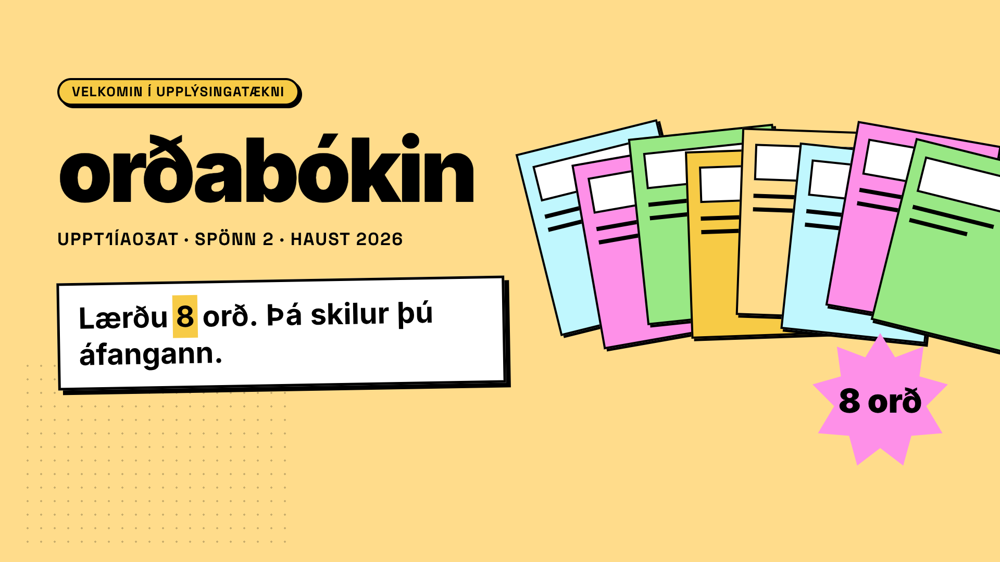
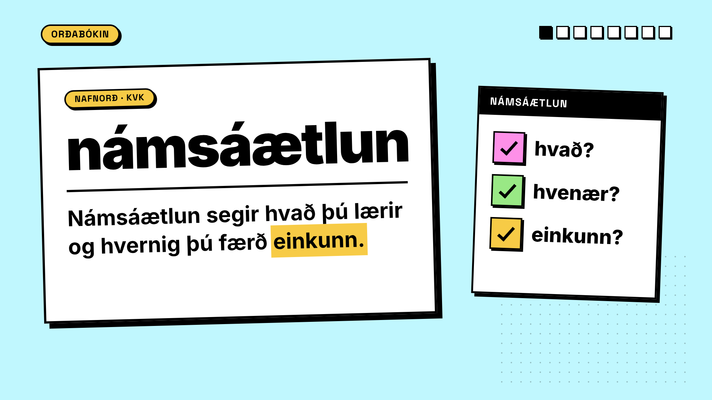
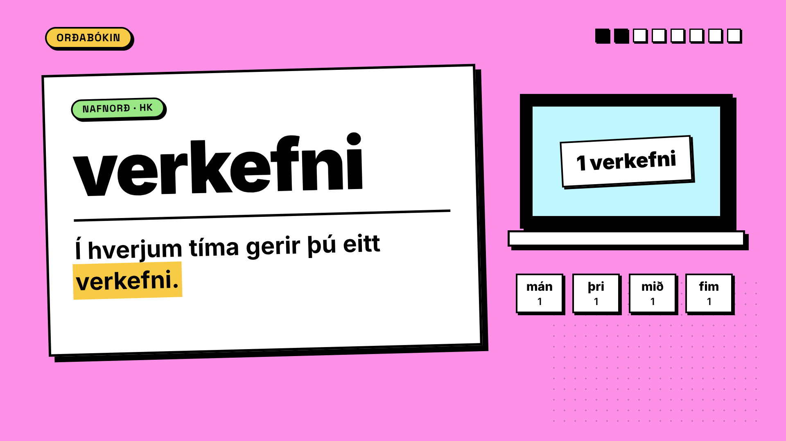
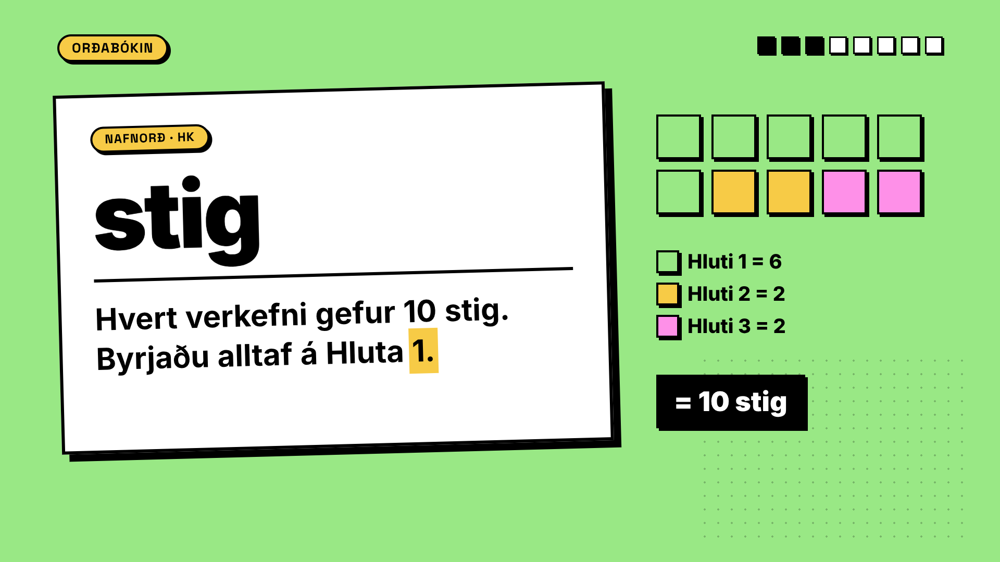
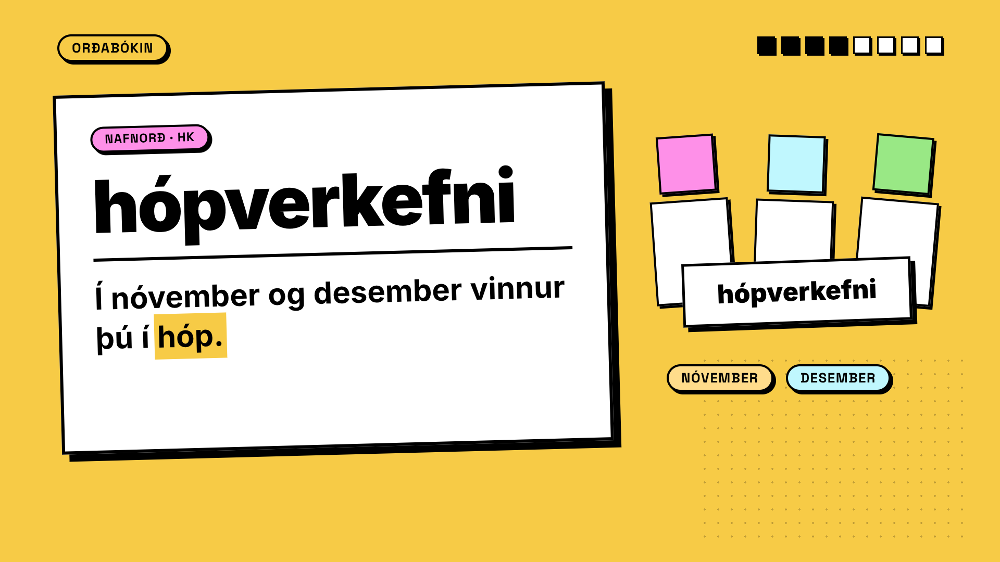
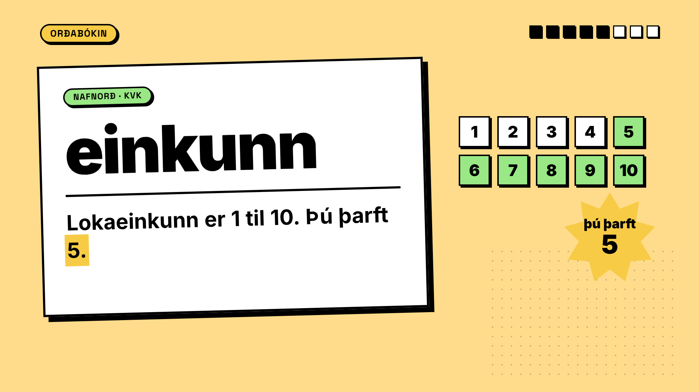
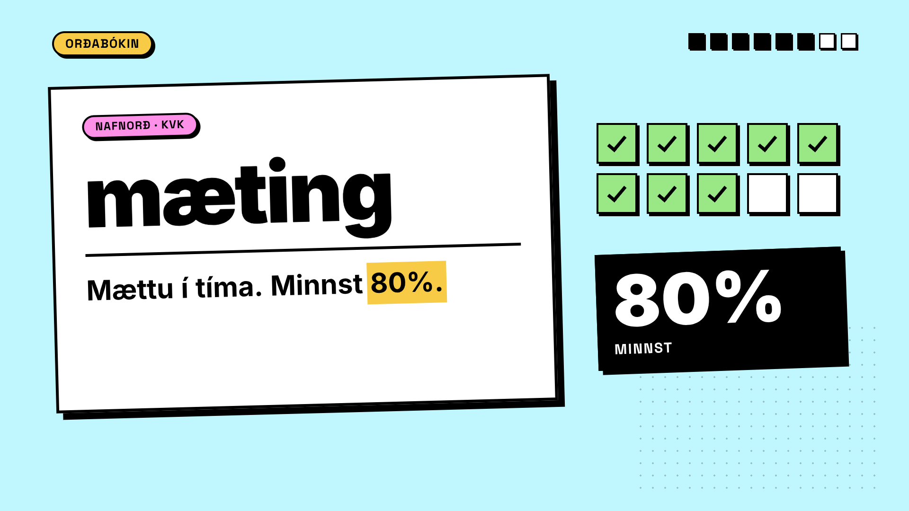
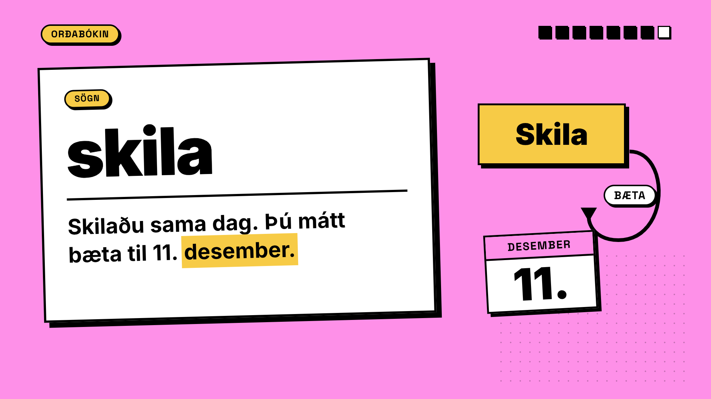
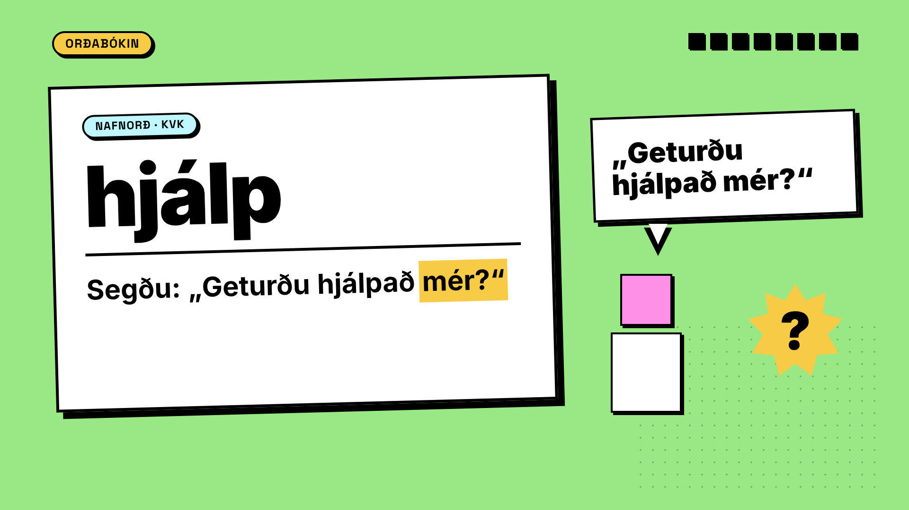
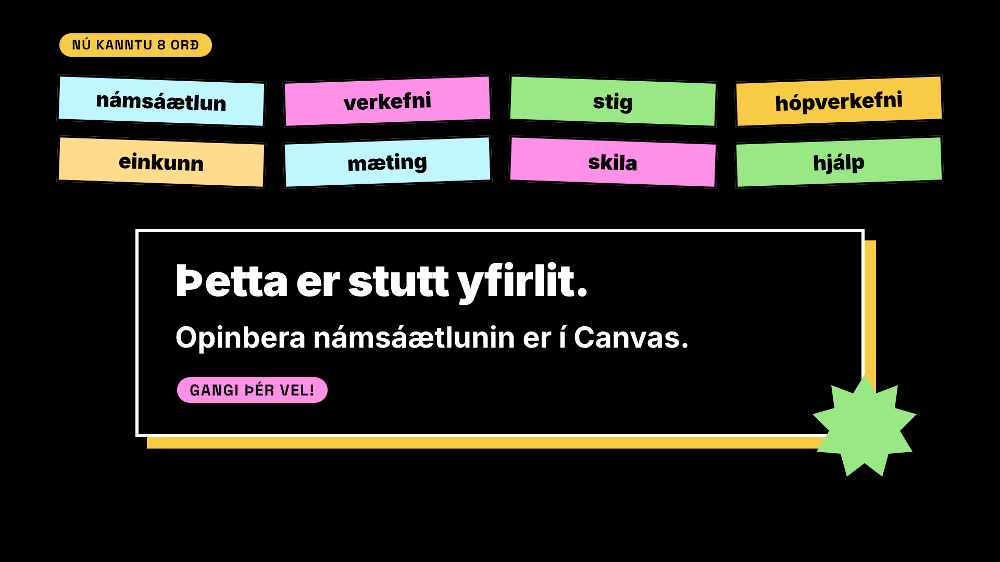

Átta spjöld í blævæng, titillinn „orðabókin“. Gunnar: „Velkomin í upplýsingatækni! Lærðu átta orð. Þá skilur þú áfangann.“

Orðið skrifast inn, síðan setningin; hvert orð lýsist upp þegar Gunnar segir það. Til hægri: plan með þremur hökum.

Fartölva með einu verkefni; fjórir dagar kvikna.

10 kubbar fyllast: 6 + 2 + 2 = 10 stig.

Þrjár persónur (engin andlit, engin nöfn) við eitt spjald; nóvember og desember.

Kvarði 1–10; stjarnan „þú þarft 5“ lendir á 5.

Átta af tíu tímum fá hak; 80% minnst.

„Skila“-hnappur ýtist niður; ör hringar til baka: bæta til 11. desember.

Talbóla: „Geturðu hjálpað mér?“

Orðin átta raðast í rist (upprifjun), síðan svarti lokaramminn: stutt yfirlit, opinbera námsáætlunin er í Canvas.